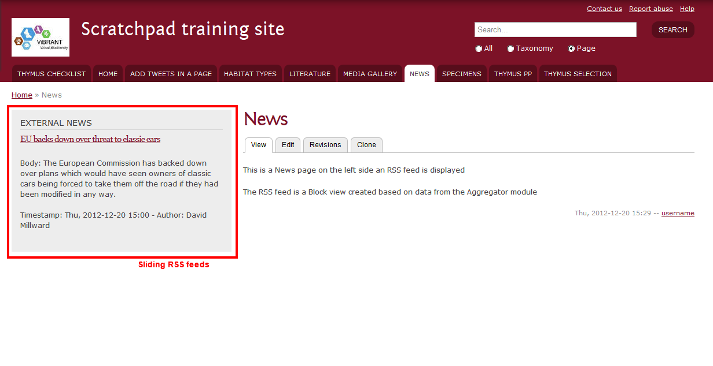

Enabling blocks¶
Aim: Enable a block in an existing page
You need:
- The name of the Block you wish to enable
Time: 5 min

Instructions¶
- From the administration menu bar go to Structure > Blocks
- Scroll the page to find the Block you wish to enable in one or more of your pages
- Click on Configure found on the right end of the row
- Give a title for your Block. This will replace the default title of this Block
- In the region settings select the are you wish your block to appear
in
- Select Sidebar if you wish the block to be visible as a right sidebar in one or more of your pages
- Select Footer if you wish the block to be visible in the footer area in one or more of your pages
- Select Menu if you wish the block to be visible in menu in one or more of your pages. Note that this option will not work with all Blocks
- From the Pages tab select whether you wish the block to be visible
in certain existing pages or be excluded only in certain pages
- Write the path of a page.
- Write each path in a separate line
- For example: for xxxx.myspecies.info/news write news. For xxxx.myspecies.info/blog/my-blog-post write blog/my-blog-post To include all pages below xxx.myspecies.info/blog write blog/*
- Click Display as Tab in the Tabify the Block tab if you wish the content of the block to appear as a sidescreen tab (like the issues queue tab)
- Select which side of the screen you wish the tab to appear in
- Select whether the tab will expand on click or hover of the mouse
- Set the block to be visible in certain content type pages. To do so select those you wish from the Content types tab. This will not affect the visibility of the tab to other previously selected pages
- Restrict the visibility of the block by selecting the user roles you wish to be able to see the block
- Click Save Block